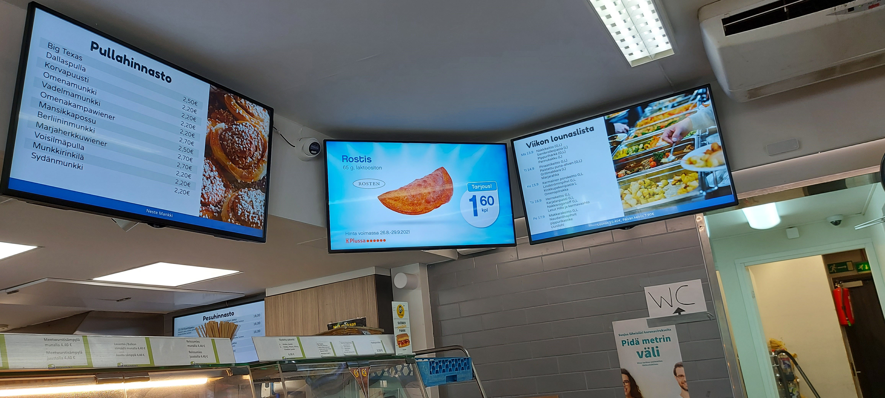

Työharjoittelu Ideafix oy
ICT-asentajan työharjoittelu 8-11/2021

AV/ICT - työharjoittelu asentaja n. 3 kuukaudeksi, ja monipuolisia työtehtävää.
Työtehtäväni kuuluu:- Käyttöjärjestelmän ylläpitoa, etäyhteys ja tukipalvelu. Ubuntu Linux ja Bash, VPN verkko ja SSH protokolla.
- Televisio näytöt ja mainosnäytöt, elokuvateatteri ja AV-järjestelmät
- Fyysiset laiteiston kokoonpanot, Iot laiteet, verkkolaiteiden konfigurointi.
- Asennus ja/tai huolto mainosnäytöt, ja muu käyttötuki toiminta
- Mahdolliset matkustamiset ympäri Suomen kaupunkia. Suurin osat työtehtävät tapahtui Uudenmaan alueella.